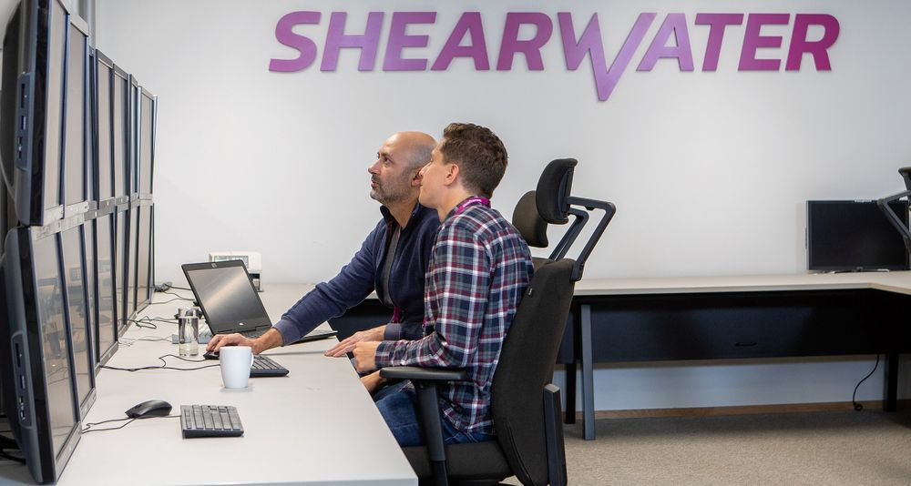
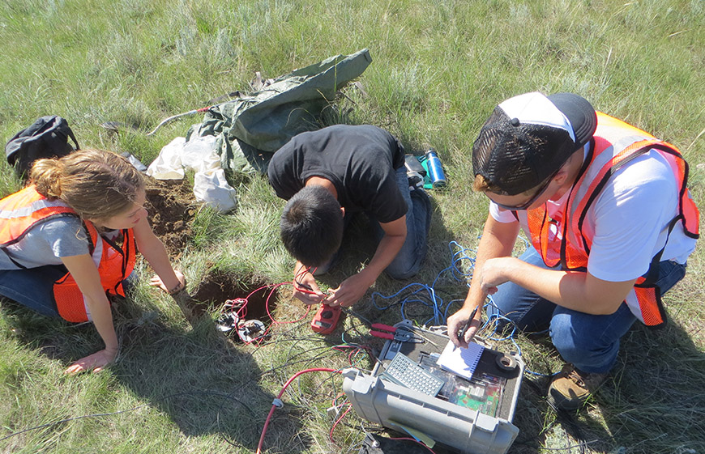

O que é Geofísica?
Quais são as aplicações da Geofísica?
O geofísico é o profissional que estuda as propriedades físicas, a estrutura, a composição e os processos dinâmicos e fenomenais da Terra. Seu trabalho é investigar os fenômenos elétricos, magnéticos, gravitacionais, sísmicos e térmicos do planeta. Também é função do geofísico calcular a movimentação do solo e dos vulcões, medindo a intensidade de terremotos e maremotos, investigar as composições físico-químicas dos oceanos e formações rochosas e medir as forças que afetam o globo terrestre. Para isso, ele se utiliza das leis da Matemática e da Física para planejar e executar levantamentos geofísicos. As principais áreas em que a Geofísica é aplicada são:
Entre outras diversas aplicações. A geofísica é uma ferramenta valiosa, pois ela fornece informações importantes sobre a Terra e seus recursos, e ajuda proteger o meio ambiente.
Quais Universidades possuem Geofísica?
Atualmente existem 12 universidades brasileiras que oferecem cursos de graduação em Geofísica:
Como é o mercado de trabalho para a Geofísica?
Quem se forma em Geofísica encontra um vasto campo de atuação profissional. Dentre as áreas mais promissoras estão a Geofísica de Exploração, com muitas oportunidades de vagas na indústria do petróleo, a Geofísica Ambiental e a Geofísica Marinha. Outros segmentos que demandam geofísicos são a prospecção de outros tipos de minérios, as empresas prestadoras de serviços em geofísica, a construção civil e a pesquisa científica. As atividades profissionais de geofísica podem envolver a coleta de dados em campo, o uso de equipamentos e softwares específicos, o mapeamento de interferências, a avaliação da resistência do solo, a detecção de água subterrânea, a avaliação de riscos geotécnicos e o monitoramento de estruturas.
Quem se forma em Geofísica encontra um vasto campo de atuação profissional. Dentre as áreas mais promissoras estão a Geofísica de Exploração, com muitas oportunidades de vagas na indústria do petróleo, a Geofísica Ambiental e a Geofísica Marinha. Outros segmentos que demandam geofísicos são a prospecção de outros tipos de minérios, as empresas prestadoras de serviços em geofísica, a construção civil e a pesquisa científica. As atividades profissionais de geofísica podem envolver a coleta de dados em campo, o uso de equipamentos e softwares específicos, o mapeamento de interferências, a avaliação da resistência do solo, a detecção de água subterrânea, a avaliação de riscos geotécnicos e o monitoramento de estruturas.